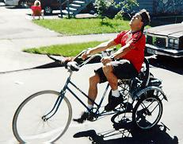
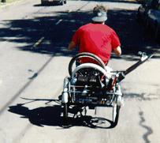
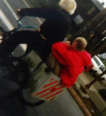
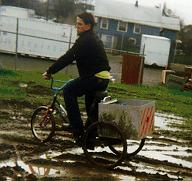
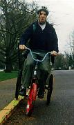
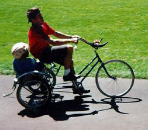

Tricycles form the backbone of any extended activity. Chunk is fortunate enough to have acquired two of them, code named Trike and Keg Trike. Their necessity is manifested in three ways.
 
The deeper we push our quest for domination into the Forbidden Zone, the greater we feel the effects of attrition. The high radiation, combined with the orgone flux produced by the wide-band chunkulation field, greatly amplify the effects of entropy. We also tend to make our journeys more interesting by jousting and running into things.
These factors, coupled with the fact that Chunkcycles are crafted using the cheapest materials and unsound construction techniques, mean that we can expect our vehicles to lose functionality at any time.
While we look forward to this weeding-out process as an opportunity to pick up scabs, it does imply that Chunk missions require quite a lot of supplies. The usual bicycle tools must be supplemented with a hammer, long pipe for whacking things, anaesthetic, radiation pills, etc. etc..

Even with these precautions, our route can often be traced by the trail of disabled bicycles locked up along the way. The pilots of downed vehicles are towed on skateboards, or become passengers on padded racks, banana seats, or the back of Keg Trike. In the darkest hours, some of us have had to resort to taking the bus home.
What happens when a pilot is killed in the line of duty? We have very specific procedures; it makes us feel tough or something. If we're on a hill, we duct-tape the pilot to the steed, light them on fire, and give them a Viking funeral. If we're at the bottom of a gravity well, we strip them both for parts and bury the remains in the nearest trench.
 
The Forbidden Zone is riddled with treacherous mutant-ridden cesspools of radiation which must be fully explored and subdued. Trikes, of course, dominate these areas. Trikes can go anywhere. We have ridden trikes down steep ice-and-slush covered hills; as long as the pilot keeps the front wheel below the rear wheels, the machine will stay upright.
|  | We need to replace fallen pilots as well as fallen cycles. This is easy to do - we ride around the neighborhood and find kids who are sick of their parents. We take them to the Secret Hideout, fill them with beer, and stick them on whichever bike is currently the hardest to ride. If they don't cause any serious damage to themselves, we let them stick around. |
| Copyright 2003 Megulon Five <megulon5@dclxvi.org>. |
|
This work is licensed under a Creative Commons License. | Last modified 10 March 1999. |